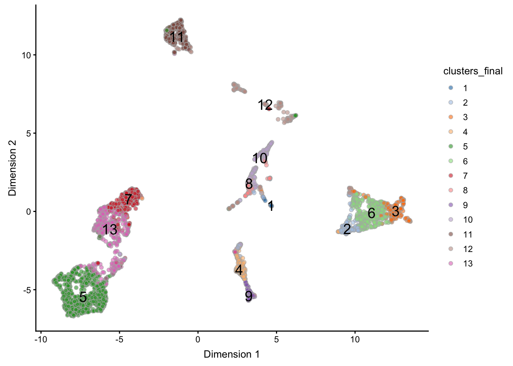
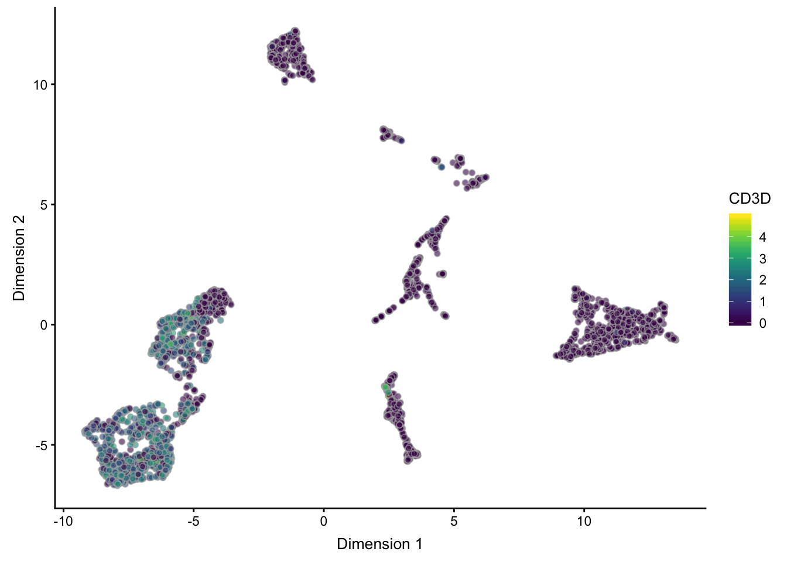

Chapter 6 Large-scale Data
author: Davide Risso, Robert A. Amezquita
This workflow illustrates the latest Bioconductor infrastructure to analyze large single-cell datasets that may not entirely fit in memory. We focus on the most common application in exploratory single-cell analysis, namely to find subpopulations of cells. The proposed workflow consists of the following steps:
- Normalization
- Dimensionality reduction
- Clustering
We will exploit a number of Bioconductor packages able to interact with the HDF5 on-disk data representation, freeing us of the need to load the full dataset in memory.
This workflow was specially designed to handle large datasets such as the 1.3 million cell Human Cell Atlas in the HCAData scRNA-seq dataset. However, in our workflow, we will subsample the HCAData object down to a more manageable number solely for the sake of (compilation) time.
6.1 Package Requirements
These packages will be required for working through the vignette, and can be installed by running the code below:
data_pkg <- c("HCAData", "ExperimentHub")
calc_pkg <- c("scater", "scran", "mbkmeans", "BiocSingular", "uwot")
visl_pkg <- c("RColorBrewer", "pheatmap", "ggplot2")
infr_pkg <- c("DelayedMatrixStats", "pryr", "BiocParallel")
BiocManager::install(c(data_pkg, calc_pkg, visl_pkg, infr_pkg))library(HCAData)
library(ExperimentHub)
library(scater)
library(scran)
library(uwot)
library(BiocSingular)
library(mbkmeans)
library(RColorBrewer)
library(pheatmap)
library(ggplot2)
library(DelayedMatrixStats)
library(pryr)
library(BiocParallel)6.2 Interacting with HDF5 files
At a low-level, the main interface between HDF5 and Bioconductor is implemented in the packages rhdf5, which provides read/write functionalities, Rhdf5lib, which provides C and C++ HDF5 libraries, and beachmat, which provides a consistent C++ class interface for a variety of commonly used matrix types, including sparse and HDF5-backed matrices.
These packages are useful for developers that want to develop methods able to interact with HDF5 data sets. However, for most Bioconductor users interested in the analysis of single-cell data, the entry point is represented by the high-level class SingleCellExperiment (implemented in the SingleCellExperiment package) and the lower level classes HDF5Matrix and DelayedMatrix, which can be stored in the assay slot of a SingleCellExperiment object. Once the data are stored in a SingleCellExperiment object with HDF5Matrix or DelayedMatrix as its assay, the packages scater, scran, BiocSingular and mbkmeans can be seamlessly used.
The package DelayedMatrixStats deserves a special mention: it implements the rich API of the CRAN package matrixStats for HDF5Matrix and DelayedMatrix objects.
We invite the reader to find more details on all the mentioned packages in their relative vignettes. In the remainder of this use case, we will use these methods to find cell sub-populations in a real datasets.
6.3 Loading the Data
Here, we use one of the Human Cell Atlas preview datasets available in the HCAData Bioconductor package, the ica_bone_marrow dataset.
eh <- ExperimentHub()
query(eh, "HCAData")
##change to brain
sce <- HCAData("ica_bone_marrow")In order to make the compilation time more manageable, here we will subsample the data to a more reasonable size. For our use, we will go down to 5000 cells.
set.seed(1234)
subsample <- sample(ncol(sce), 5000) # super downsample temporary
sce <- sce[, subsample]One small bit of housekeeping - the initial gene IDs used as rownames for sce are in Ensembl Gene ID format. To make the gene ids human-readable, we convert the rownames to gene symbol. In this case, the mapping between Ensembl Gene ID’s and symbols is kept in the rowData slot of our sce, and so we overwrite the current rownames as follows:
rownames(sce) <- rowData(sce)$SymbolWe can inspect the resulting sce object’s key characteristics:
sce[1:5, 1:5] # first 5x5 entries## class: SingleCellExperiment
## dim: 5 5
## metadata(7): high_mito genes_keep ... wcss clusters_final
## assays(2): counts logcounts
## rownames(5): RP11-34P13.3 FAM138A OR4F5 RP11-34P13.7 RP11-34P13.8
## rowData names(3): ID Symbol scater_qc
## colnames(5): MantonBM1_HiSeq_8-AGGTCCGGTACCAGTT-1
## MantonBM5_HiSeq_8-ATCTACTAGCTCCTTC-1
## MantonBM5_HiSeq_7-CGATTGAGTCGAAAGC-1
## MantonBM5_HiSeq_8-CAGAGAGAGTATTGGA-1
## MantonBM7_HiSeq_8-CACAAACCAGCTGTTA-1
## colData names(4): Barcode scater_qc clusters_prenorm
## clusters_final
## reducedDimNames(3): PCA TSNE UMAP
## spikeNames(0):As well as the assay slot of sce, which we see below that the data is indeed stored in an object of the DelayedMatrix class, and that the Ensembl gene ID’s have been replaced with gene symbols:
assay(sce)[1:5, 1:5] # first 5x5 entries## <5 x 5> DelayedMatrix object of type "integer":
## MantonBM1_HiSeq_8-AGGTCCGGTACCAGTT-1 ...
## RP11-34P13.3 0 .
## FAM138A 0 .
## OR4F5 0 .
## RP11-34P13.7 0 .
## RP11-34P13.8 0 .
## MantonBM7_HiSeq_8-CACAAACCAGCTGTTA-1
## RP11-34P13.3 0
## FAM138A 0
## OR4F5 0
## RP11-34P13.7 0
## RP11-34P13.8 06.4 Preprocessing
First, we use the scater package to compute a set of QC measures and filter out the low-quality samples.
ctrl <- list(Mito = grep("^MT", rowData(sce)$Symbol))
sce <- calculateQCMetrics(sce,
feature_controls = ctrl,
compact = TRUE, # return as nested DF
BPPARAM = MulticoreParam(2))6.4.1 Remove Damaged Cells
Here we calculate which cells have a high proportion of mitocondrial reads, using it as a proxy for cell damage, and save the result into the metadata slot.
high_mito <- isOutlier(colData(sce)$scater_qc$feature_control_Mito$pct_counts,
nmads = 3, type = "higher")
metadata(sce)$high_mito <- high_mitoThe table below enumerates the cells which fail/pass this filter:
table(metadata(sce)$high_mito)##
## FALSE TRUE
## 4496 504We can then filter cells in our sce object on this basis.
sce <- sce[, !metadata(sce)$high_mito]6.4.2 Determine Lowly Expressed Genes
Before proceding with the data analysis, we remove the lowly expressed genes. Here, we keep only those genes that have at least 1 UMI in at least 5% of the data. These threshold are dataset-specific and may need to be taylored to specific applications.
num_reads <- 1
num_cells <- 0.05 * ncol(sce)
keep <- which(DelayedArray::rowSums(counts(sce) >= num_reads) >= num_cells)
metadata(sce)$genes_keep <- keepWe will use the genes_keep vector to subset our genespace in upcoming calculations.
6.5 Normalization
Normalization is a crucial step in the preprocessing of the results. Here, we use the scran package to compute size factors that we will use to compute the normalized log-expression values.
It has been shown that the scran method works best if the size factors are computed within roughly homogeneous cell populations; hence, it is beneficial to run a quick clustering on the raw data to compute better size factors. This ensures that we do not pool cells that are very different. Note that this is not the final clustering to identify cell sub-populations.
Here we use mbkmeans to perform an initial clustering based on the count data in the sce object. Note that given that this operates on counts rather than the principal components, and thus will take a longer amount of time to compute. A more thorough explanation of mbkmeans and its parameters will be covered in a subsequent section.
Note that we use the set.seed() function to ensure the reproducibility of the results.
set.seed(1234)
## Subset down based on kept genes; use only 1000 genes
## to speed up prenorm clustering
subsample <- sample(length(metadata(sce)$genes_keep), 1000)
genes_1k <- metadata(sce)$genes_keep[subsample]
counts_genes_1k <- counts(sce)[genes_1k, ]
## Cluster based on 1k genes x counts data
clusters_prenorm <- mbkmeans(counts_genes_1k,
max_iters = 1, # reduced for faster clustering
clusters = 10, # guesstimate
batch_size = 50)
## Save results into colData slot
colData(sce)$clusters_prenorm <- clusters_prenorm$Clusters
## Compute size factors w.r.t. prenorm clusters
sce <- computeSumFactors(sce,
min.mean = 0.1,
cluster = sce$clusters_prenorm,
BPPARAM = MulticoreParam(2))Finally, we compute normalized log-expression values with the normalize() function from the scater package.
sce <- normalize(sce)Note that the log-normalized data are stored in the logcounts assay of the object. Since the counts assay is a DelayedMatrix and we have only one set of size factors in the object, the normalized data are also stored as a DelayedMatrix.
## Verifying that our logcounts are also of DelayedMatrix class
logcounts(sce)## <33694 x 4496> DelayedMatrix object of type "double":
## MantonBM1_HiSeq_8-AGGTCCGGTACCAGTT-1 ...
## RP11-34P13.3 0 .
## FAM138A 0 .
## OR4F5 0 .
## RP11-34P13.7 0 .
## RP11-34P13.8 0 .
## ... . .
## AC233755.2 0 .
## AC233755.1 0 .
## AC240274.1 0 .
## AC213203.1 0 .
## FAM231B 0 .
## MantonBM7_HiSeq_1-GTCTTCGTCTGTCCGT-1
## RP11-34P13.3 0
## FAM138A 0
## OR4F5 0
## RP11-34P13.7 0
## RP11-34P13.8 0
## ... .
## AC233755.2 0
## AC233755.1 0
## AC240274.1 0
## AC213203.1 0
## FAM231B 0This allows us to store in memory only the colData and rowData, resulting in a fairly small object. We can inspect the size of the object using the pryr package object_size() function. We leave it to the interested reader to compare the results to data that are fully loaded in-memory.
pryr::object_size(sce)## 15.8 MB6.6 Dimensionality reduction
Here, we perform dimensionality reduction by first identifying the top 1000 most variable genes and then running PCA on the normalized log counts.
## Find most variable genes based on logcounts
vars_genes <- DelayedMatrixStats::rowVars(logcounts(sce))
names(vars_genes) <- rownames(sce)
vars_genes <- sort(vars_genes, decreasing = TRUE)
## save our genes variances into the metadata slot for safekeeping
metadata(sce)$vars_genes <- vars_genes
## Specify the top 1000 most highly variable genes (hvg) by name
metadata(sce)$hvg_genes <- names(metadata(sce)$vars_genes)[1:1000]## transpose and subset by hvg the logcounts
for_pca <- t(logcounts(sce)[metadata(sce)$hvg_genes, ])
## Run PCA with parallelization + random svd (via rsvd())
pca <- BiocSingular::runPCA(for_pca, rank = 20,
BSPARAM = RandomParam(deferred = FALSE),
BPPARAM = MulticoreParam(2))
## Save PCA result into the reducedDims slot
reducedDim(sce, "PCA") <- pca$x6.7 Clustering with Mini-batch k-means
To perform an exploration of optimal clustering, we run mbkmeans() through multiple iterations of k. Here in particular, we’ve set the calc_wcss parameter to true to determine where our optimal number of k occurs. Further, we save the overall results once again into our metadata slot.
set.seed(1234)
wcss <- lapply(10:20, function(k) {
cl <- mbkmeans(sce, reduceMethod = "PCA",
clusters = k,
batch_size = 50,
num_init = 10, max_iters = 100,
calc_wcss = TRUE)
})
metadata(sce)$wcss <- wcssWe can then plot the corresponding within-clusters sum of squares to determine our optimal k.
plot(10:20, sapply(metadata(sce)$wcss, function(x) sum(x$WCSS_per_cluster)),
type = "b",
xlab = "Number of clusters K",
ylab = "Total within-clusters sum of squares")
Following that, we can once again perform clustering, but this time changing our parametrization to improve our results by increasing batch size, setting the desired number of clusters, and increasing the number of initializations and max iterations the algorithm goes through.
set.seed(1234)
## Perform final clustering on clustering with k=13
clusters_final <- mbkmeans(sce, reduceMethod = "PCA", clusters = 13,
batch_size = 200,
num_init = 10, max_iters = 100)
## Save full results into metadata
metadata(sce)$clusters_final <- clusters_final
## Save the clusters into colData as a factor for plotting
colData(sce)$clusters_final <- as.factor(clusters_final$Clusters)
## alternately: sce$cluster_final6.8 Visualization
To visualize our final results, we can calculate the tSNE representation of our data, and then plot our final cluster designations. Note that here we use the BNPARAM argument of runTSNE() to supply a BiocNeighbors param, the AnnoyParam()
set.seed(1234)
## Calculate TSNE representation
sce <- runTSNE(sce,
use_dimred = "PCA",
external_neighbors = TRUE,
BNPARAM = BiocNeighbors::AnnoyParam(),
nthreads = 2,
BPPARAM = BiocParallel::MulticoreParam(2))We can then plot our resulting tSNE representation, here colouring by the final clustering assignment as well as adding a text overlay.
## Plot the TSNE
plotTSNE(sce,
colour_by = "clusters_final",
text_by = "clusters_final")
Furthermore, we can calculate the UMAP representation, using the very speedy uwot package implementation, manually assigning the results into the reducedDims slot as before.
set.seed(1234)
## Calculate umap representation and assign to reducedDims slot
um <- uwot::umap(reducedDim(sce, "PCA"), nn_method = "annoy",
approx_pow = TRUE, n_threads = 2)
reducedDim(sce, 'UMAP') <- umAnd subsequently plot our UMAP representation as well:
plotReducedDim(sce, "UMAP",
colour_by = "clusters_final",
text_by = "clusters_final")
6.8.1 Marker genes
As a final exercise, we show some expression plots on key marker genes in the form of a heatmap and expression plots on the UMAP representation.
markers <- c("IL7R", #CD4
"CD14",
"LYZ", #CD14
"MS4A1", #B cells
"CD8A", #CD8
"FCGR3A", #Monocytes
"MS4A7",
"GNLY",
"NKG7", #NK cells
"FCER1A", #Dendritic
"CST3",
"PPBP",
"PF4", #megakaryocyte
"CD3D"
)
## Calculate the mean expression of each marker w.r.t. cluster
means <- apply(counts(sce[which(rowData(sce)$Symbol %in% markers),]), 1,
tapply, sce$clusters_final, mean)
colnames(means) <- rowData(sce[colnames(means),])$Symbol
## Plot the heatmap of all marker genes
pheatmap(log2(t(means)+1), scale = "row", cluster_cols = FALSE)
## Plot expression of select genes on UMAP
plotReducedDim(sce, "UMAP", colour_by = "CD3D")
plotReducedDim(sce, "UMAP", colour_by = "NKG7")
plotReducedDim(sce, "UMAP", colour_by = "LYZ")